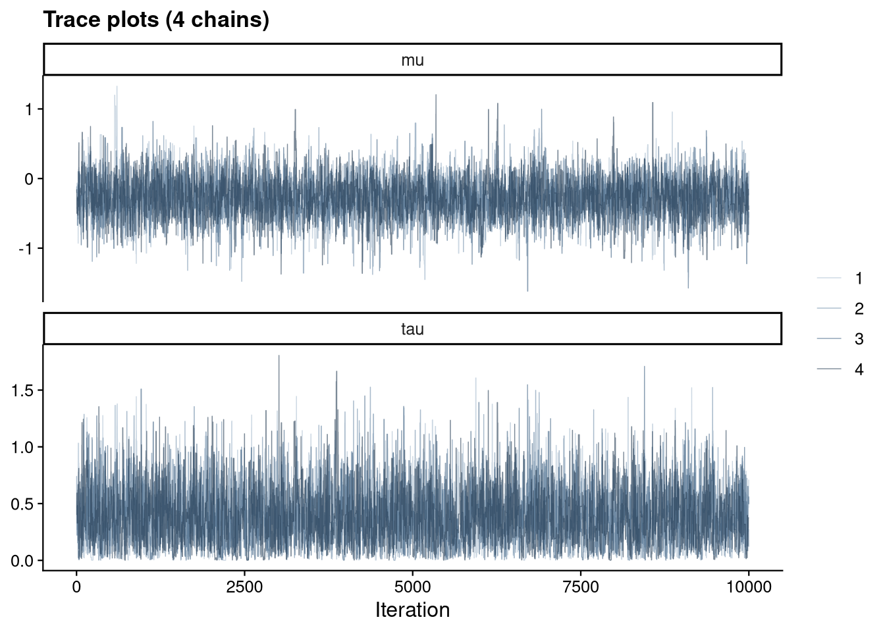
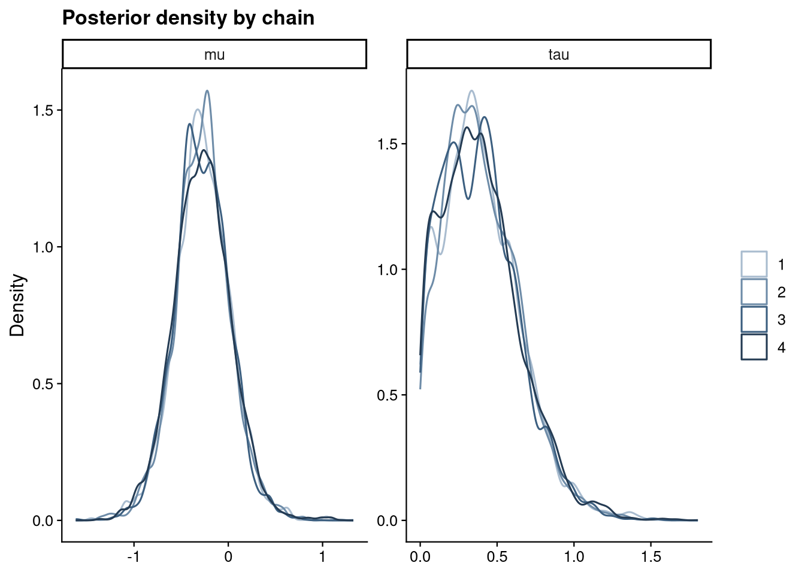

Show code
source("analysis/meta_helpers.R")
library(coda)
ma <- load_ma()Preliminary, machine-assisted output pending human review.
The headline Bayesian estimates (Bayesian page) are computed semi-analytically by bayesmeta and therefore do not involve MCMC. To provide genuine sampler diagnostics — and an independent check of that computation — we refit the identical model by MCMC using a self-contained random-walk Metropolis sampler written in base R (no JAGS or Stan dependency).
For studies \[i = 1, \dots, k\] with observed log odds ratio \[y_i\] and standard error \[s_i\]:
\[y_i \sim \mathrm{Normal}(\theta_i,\ s_i^2), \qquad \theta_i \sim \mathrm{Normal}(\mu,\ \tau^2)\]
with weakly informative priors \[\mu \sim \mathrm{Normal}(0, 1.5^2)\] and \[\tau \sim \mathrm{half\text{-}Normal}(0.5)\]. The pooled odds ratio is \[\mathrm{OR} = e^{\mu}\]. The study effects \[\theta_i\] are integrated out analytically, so the sampler targets the marginal posterior of \[(\mu, \tau)\]. We ran 4 chains — 3000 burn-in iterations (during which the proposal covariance is adapted) followed by 10,000 retained iterations per chain.
rhat <- gelman.diag(s[, c("mu", "tau")], multivariate = FALSE)$psrf
ess <- effectiveSize(s[, c("mu", "tau", "OR")])
tibble(Parameter = c("mu (log-OR)", "tau"),
`R-hat` = round(rhat[, 1], 3),
`R-hat upper CI` = round(rhat[, 2], 3),
`Effective sample size` = round(ess[c("mu", "tau")])) |>
knitr::kable()| Parameter | R-hat | R-hat upper CI | Effective sample size |
|---|---|---|---|
| mu (log-OR) | 1.001 | 1.003 | 3751 |
| tau | 1.001 | 1.002 | 4540 |
All potential scale reduction factors (R̂) are at or very close to 1.00 and effective sample sizes are in the thousands, indicating the chains have converged and mixed well.
draws <- purrr::imap_dfr(s, function(chain, i)
as_tibble(as.matrix(chain)[, c("mu", "tau")]) |>
mutate(chain = factor(i), iter = row_number()))
draws_long <- pivot_longer(draws, c(mu, tau), names_to = "parameter", values_to = "value")
ggplot(draws_long, aes(iter, value, color = chain)) +
geom_line(alpha = 0.6, linewidth = 0.25) +
facet_wrap(~ parameter, ncol = 1, scales = "free_y") +
scale_color_manual(values = jama_chains) +
labs(x = "Iteration", y = NULL, title = "Trace plots (4 chains)") +
theme_jama()

The chains are indistinguishable, with no drift or stickiness in the traces and overlapping per-chain densities.
bayesmetabm_sens <- fit_bm(ma)
mcmc_or <- exp(summary(s)$quantiles["mu", c("2.5%", "50%", "97.5%")])
tibble(
Engine = c("Random-walk Metropolis (MCMC)", "bayesmeta (semi-analytic)"),
`OR median` = c(mcmc_or[2], or_ci(bm_sens)[1]),
`CrI lower` = c(mcmc_or[1], or_ci(bm_sens)[2]),
`CrI upper` = c(mcmc_or[3], or_ci(bm_sens)[3])
) |>
mutate(across(where(is.numeric), ~round(.x, 3))) |>
knitr::kable()| Engine | OR median | CrI lower | CrI upper |
|---|---|---|---|
| Random-walk Metropolis (MCMC) | 0.758 | 0.424 | 1.370 |
| bayesmeta (semi-analytic) | 0.760 | 0.426 | 1.367 |
The two independent implementations agree to within Monte Carlo error, confirming the semi-analytic posterior used elsewhere on this site.